public class RefreshTokenInterceptor implements HandlerInterceptor {
private StringRedisTemplate stringRedisTemplate;
public RefreshTokenInterceptor(StringRedisTemplate stringRedisTemplate) {
this.stringRedisTemplate = stringRedisTemplate;
}
public boolean preHandle(HttpServletRequest request, HttpServletResponse response, Object handler) throws Exception {
// 1.获取请求头中的token
String token = request.getHeader("authorization");
if (StrUtil.isBlank(token)) {
return true;
}
// 2.基于token获取redis中的用户
String key = RedisConstants.LOGIN_USER_KEY + token;
Map<Object, Object> userMap = stringRedisTemplate.opsForHash().entries(key);
// 3.判断用户是否存在
if (userMap.isEmpty()) {
// 4.不存在，拦截，返回401
return true;
}
// 5.存在，保存用户信息到 ThreadLocal
UserDTO userDTO = BeanUtil.fillBeanWithMap(userMap, new UserDTO(), false);
UserHolder.saveUser(userDTO);
// 6.刷新token有效期
stringRedisTemplate.expire(key, RedisConstants.LOGIN_USER_TTL, TimeUnit.MINUTES);
// 7.放行
return true;
}
public void afterCompletion(HttpServletRequest request, HttpServletResponse response, Object handler, Exception ex) throws Exception {
// 移除用户
UserHolder.removeUser();
}
}
@Configuration
public class WebMvcConfig implements WebMvcConfigurer {
@Resource
private StringRedisTemplate stringRedisTemplate;
@Override
public void addInterceptors(InterceptorRegistry registry) {
registry.addInterceptor(new LoginInterceptor())
.addPathPatterns("/**")
.excludePathPatterns("/user/code","/user/login","/blog/hot","/shop/**","/shop-type/**","/upload/**","/voucher/**")
.order(1);
registry.addInterceptor(new RefreshTokenInterceptor(stringRedisTemplate))
.addPathPatterns("/**")
.order(0);
}
}
查询一个不存在的数据，缓存和数据库都不命中，而大量请求这种查询的请求导致数据库压力增大 原因：
public <R, ID> R getWithPassThrough(String keyPrefix, ID id, Class<R> type, Function<ID, R> dbFallback, Long time, TimeUnit unit){
String key = keyPrefix + id;
String json = stringRedisTemplate.opsForValue().get(key);
if (StrUtil.isNotBlank(json)) {
return JSONUtil.toBean(json, type);
}
if (json != null) {
return null;
}
R r = dbFallback.apply(id);
if (r == null) {
stringRedisTemplate.opsForValue().set(key, "", time, unit);
return null;
}
this.set(key, r, time, unit);
return r;
}
缓存击穿：当前的key是一个热点key,并发量非常大，而对该key的缓存重建不能在短时间完成，比如key失效了，有大量的线程重建缓存，增加后端的负载。
public <R, ID> R getWithLogicalExpire(String keyPrefix, String lockKeyPrefix,ID id, Class<R> type, Function<ID, R> dbFallback, Long time, TimeUnit unit){
String key = keyPrefix + id;
String json = stringRedisTemplate.opsForValue().get(key);
if (StrUtil.isBlank(json)) {
return null;
}
RedisData redisData = JSONUtil.toBean(json, RedisData.class);
R r = JSONUtil.toBean((JSONObject) redisData.getData(), type);
LocalDateTime expireTime = redisData.getExpireTime();
// 判断是否过期
if (expireTime.isAfter(LocalDateTime.now())) {
// 没有过期，直接返回数据
return r;
}
// 开启一个线程，刷新缓存
String lockKey = lockKeyPrefix + id;
boolean isLock = tryLock(lockKey);
if(isLock){
CACHE_REBUILD_EXECUTOR.submit(() -> {
try {
// 重建缓存
R r1 = dbFallback.apply(id);
this.setWithLogicalExpire(key, r1, time, unit);
} catch (Exception e) {
throw new RedisCacheException("缓存重建异常");
} finally {
// 释放锁
unLock(lockKey);
}
});
}
return r;
}
大量缓存在同一时间段内失效，发生大量的缓存穿透，所有的查询落到数据库上
package com.hmdp.utils;
import cn.hutool.core.util.BooleanUtil;
import cn.hutool.core.util.StrUtil;
import cn.hutool.json.JSONObject;
import cn.hutool.json.JSONUtil;
import com.hmdp.exception.RedisCacheException;
import org.springframework.data.redis.core.StringRedisTemplate;
import org.springframework.stereotype.Component;
import javax.annotation.Resource;
import java.time.LocalDateTime;
import java.util.concurrent.ExecutorService;
import java.util.concurrent.Executors;
import java.util.concurrent.TimeUnit;
import java.util.function.Function;
@Component
public class RedisCache {
private final StringRedisTemplate stringRedisTemplate;
public RedisCache(StringRedisTemplate stringRedisTemplate) {
this.stringRedisTemplate = stringRedisTemplate;
}
public void set(String key, Object value, Long timeout, TimeUnit timeUnit){
stringRedisTemplate.opsForValue().set(key, JSONUtil.toJsonStr(value), timeout, timeUnit);
}
// 逻辑过期
public void setWithLogicalExpire(String key, Object value, Long timeout, TimeUnit timeUnit){
RedisData redisData = new RedisData();
redisData.setData(value);
redisData.setExpireTime(LocalDateTime.now().plusSeconds(timeUnit.toSeconds(timeout)));
stringRedisTemplate.opsForValue().set(key, JSONUtil.toJsonStr(redisData));
}
/**
* 缓存穿透是指在缓存中查询一个不存在的数据，导致数据库查询，然后返回一个null值，导致客户端无法使用，称为缓存穿透。
* 粗暴用控制缓存击，直接返回空
* **/
public <R, ID> R getWithPassThrough(String keyPrefix, ID id, Class<R> type, Function<ID, R> dbFallback, Long time, TimeUnit unit){
String key = keyPrefix + id;
String json = stringRedisTemplate.opsForValue().get(key);
if (StrUtil.isNotBlank(json)) {
return JSONUtil.toBean(json, type);
}
if (json != null) {
return null;
}
R r = dbFallback.apply(id);
if (r == null) {
stringRedisTemplate.opsForValue().set(key, "", time, unit);
return null;
}
this.set(key, r, time, unit);
return r;
}
/**
* 缓存击穿
* */
// 线程池、
private static final ExecutorService CACHE_REBUILD_EXECUTOR = Executors.newFixedThreadPool(10);
public <R, ID> R getWithLogicalExpire(String keyPrefix, String lockKeyPrefix,ID id, Class<R> type, Function<ID, R> dbFallback, Long time, TimeUnit unit){
String key = keyPrefix + id;
String json = stringRedisTemplate.opsForValue().get(key);
if (StrUtil.isBlank(json)) {
return null;
}
RedisData redisData = JSONUtil.toBean(json, RedisData.class);
R r = JSONUtil.toBean((JSONObject) redisData.getData(), type);
LocalDateTime expireTime = redisData.getExpireTime();
// 判断是否过期
if (expireTime.isAfter(LocalDateTime.now())) {
// 没有过期，直接返回数据
return r;
}
// 开启一个线程，刷新缓存
String lockKey = lockKeyPrefix + id;
boolean isLock = tryLock(lockKey);
if(isLock){
CACHE_REBUILD_EXECUTOR.submit(() -> {
try {
// 重建缓存
R r1 = dbFallback.apply(id);
this.setWithLogicalExpire(key, r1, time, unit);
} catch (Exception e) {
throw new RedisCacheException("缓存重建异常");
} finally {
// 释放锁
unLock(lockKey);
}
});
}
return r;
}
private boolean tryLock(String key){
Boolean flag = stringRedisTemplate.opsForValue().setIfAbsent(key, "1", 10, TimeUnit.SECONDS);
return BooleanUtil.isTrue(flag);
}
private void unLock(String key){
stringRedisTemplate.delete(key);
}
}
@Transactional
public Long seckillVoucherByLeGuan(Long voucherId) {
/**
* 乐观锁：
* 版本号法，更新时判断之前的版本号是否正确，不正确则返回错误，正确则更新库存，并返回更新后的版本号
* 根据实际情况选择版本号字段，比如stock就可以作为一种版本
* 解决超卖，.gt("stock",0)即可
*
* */
SeckillVoucher voucher = seckillVoucherService.getById(voucherId);
if(voucher.getBeginTime().isAfter(LocalDateTime.now())){
throw new VoucherException("秒杀尚未开始");
}
if(voucher.getEndTime().isBefore(LocalDateTime.now())){
throw new VoucherException("秒杀已经结束");
}
if(voucher.getStock()<=0){
throw new VoucherException("库存不足");
}
// 扣减库存
boolean success = seckillVoucherService.update()
.setSql("stock=stock-1")
.eq("voucher_id", voucherId).gt("stock",0) // 乐观锁，解决超卖
.update();
if(!success){
throw new VoucherException("库存不足");
}
// 创建订单
VoucherOrder order = new VoucherOrder();
// 全局唯一ID
long orderId = redisIdWorker.nextId("order");
order.setId(orderId);
order.setUserId(UserHolder.getUser().getId());
order.setVoucherId(voucherId);
save(order);
return orderId;
}
<dependency>
<groupId>org.aspectj</groupId>
<artifactId>aspectjweaver</artifactId>
</dependency>
@EnableAspectJAutoProxy(exposeProxy = true)
IVoucherOrderService proxy = (IVoucherOrderService) AopContext.currentProxy();
Long orderId = proxy.createVoucherOrder(voucherId);
return orderId;
@Transactional
public Long createVoucherOrder(Long voucherId) {
// 一人一单
Long userId = UserHolder.getUser().getId();
if(query().eq("user_id",userId).eq("voucher_id",voucherId).count()>0){
throw new VoucherException("您已经购买过该优惠券");
}
// 扣减库存
boolean success = seckillVoucherService.update()
.setSql("stock=stock-1")
.eq("voucher_id", voucherId).gt("stock",0) // 乐观锁，解决超卖
.update();
if(!success){
throw new VoucherException("库存不足");
}
// 创建订单
VoucherOrder order = new VoucherOrder();
// 全局唯一ID
long orderId = redisIdWorker.nextId("order");
order.setId(orderId);
order.setUserId(UserHolder.getUser().getId());
order.setVoucherId(voucherId);
save(order);
return orderId;
}
public Long seckillVoucherByYiRenYiDan(Long voucherId) {
/**
*
* 乐观锁：
* 版本号法，更新时判断之前的版本号是否正确，不正确则返回错误，正确则更新库存，并返回更新后的版本号
* 根据实际情况选择版本号字段，比如stock就可以作为一种版本
* 解决超卖，.gt("stock",0)即可
*
* */
SeckillVoucher voucher = seckillVoucherService.getById(voucherId);
if(voucher.getBeginTime().isAfter(LocalDateTime.now())){
throw new VoucherException("秒杀尚未开始");
}
if(voucher.getEndTime().isBefore(LocalDateTime.now())){
throw new VoucherException("秒杀已经结束");
}
if(voucher.getStock()<=0){
throw new VoucherException("库存不足");
}
Long userId = UserHolder.getUser().getId();
/**
* 加锁时机：
* 1. 通过userID进行加锁，但userId.toString,每次都创建新一个对象，导致锁不住，用intern()解决，intern返回规范表示，从常量池查找对应的地址
* 2.事务提交后再释放锁
* 如果在createVoucherOrder里面加锁，函数结束后，锁释放，但是事务还没有提交，存在并发安全问题。
* 所以必须在事务提交后释放锁， 锁整个函数
* 3.事务要生效是对当前的类做了动态代理，拿到代理对象，通过代理对象this.createVoucherOrder(voucherId);
* this是非代理对象，没有事务功能
* 添加注解
* <dependency>
* <groupId>org.aspectj</groupId>
* <artifactId>aspectjweaver</artifactId>
* </dependency>
* 启动类暴露代理
* @EnableAspectJAutoProxy(exposeProxy = true)
* */
// synchronized (
// userId.toString().intern()
// ){
// Long orderId = this.createVoucherOrder(voucherId);
// return orderId;
// }
synchronized (
userId.toString().intern()
){
IVoucherOrderService proxy = (IVoucherOrderService) AopContext.currentProxy();
Long orderId = proxy.createVoucherOrder(voucherId);
return orderId;
}
}
多个集群的时候前面的锁就不适用了 基于redis实现分布式锁的思路：
public interface ILock {
/**
* 尝试获取锁
* @return true代表获取锁成功，false代表获取锁失败
* @param timeoutSec 锁持有的过期时间，单位秒
*/
boolean tryLock(long timeoutSec);
void unlock();
}
存在的情况:
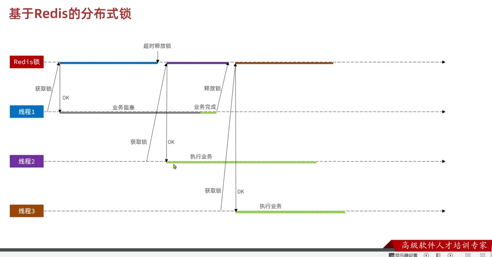
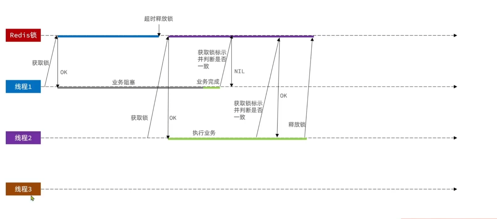
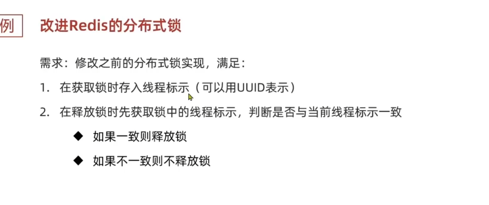
public class GaiJinRedisLock implements ILock{
private StringRedisTemplate stringRedisTemplate;
private String name;
private final static String KEY_PREFIX = "lock:";
private final static String ID_PREFIX = UUID.randomUUID().toString(true) + "-";
public GaiJinRedisLock(String name, StringRedisTemplate stringRedisTemplate) {
this.name = name;
this.stringRedisTemplate = stringRedisTemplate;
}
@Override
public boolean tryLock(long timeoutSec) {
String threadId = ID_PREFIX + Thread.currentThread().getId();
Boolean isLock = stringRedisTemplate.opsForValue().setIfAbsent(KEY_PREFIX + name, threadId, timeoutSec, TimeUnit.SECONDS);
// 防止自动拆箱的空指针
return Boolean.TRUE.equals(isLock);
}
@Override
public void unlock() {
// 判断标识是否一致
String threadId = ID_PREFIX + Thread.currentThread().getId();
String id = stringRedisTemplate.opsForValue().get(KEY_PREFIX + name);
if (threadId.equals(id)) {
stringRedisTemplate.delete(KEY_PREFIX + name);
}
}
}
public Long seckillVoucherJiQun2(Long voucherId) {
SeckillVoucher voucher = seckillVoucherService.getById(voucherId);
if (voucher.getBeginTime().isAfter(LocalDateTime.now())) {
throw new VoucherException("秒杀尚未开始");
}
if (voucher.getEndTime().isBefore(LocalDateTime.now())) {
throw new VoucherException("秒杀已经结束");
}
if (voucher.getStock() <= 0) {
throw new VoucherException("库存不足");
}
Long userId = UserHolder.getUser().getId();
String lockKey = "order:" + userId;
GaiJinRedisLock lock = new GaiJinRedisLock(lockKey, stringRedisTemplate);
boolean isLock = lock.tryLock(1200);
if (!isLock) {
throw new VoucherException("不允许重复下单");
}
try {
IVoucherOrderService proxy = (IVoucherOrderService) AopContext.currentProxy();
return proxy.createVoucherOrder(voucherId);
} finally {
// 释放锁
lock.unlock();
}
}
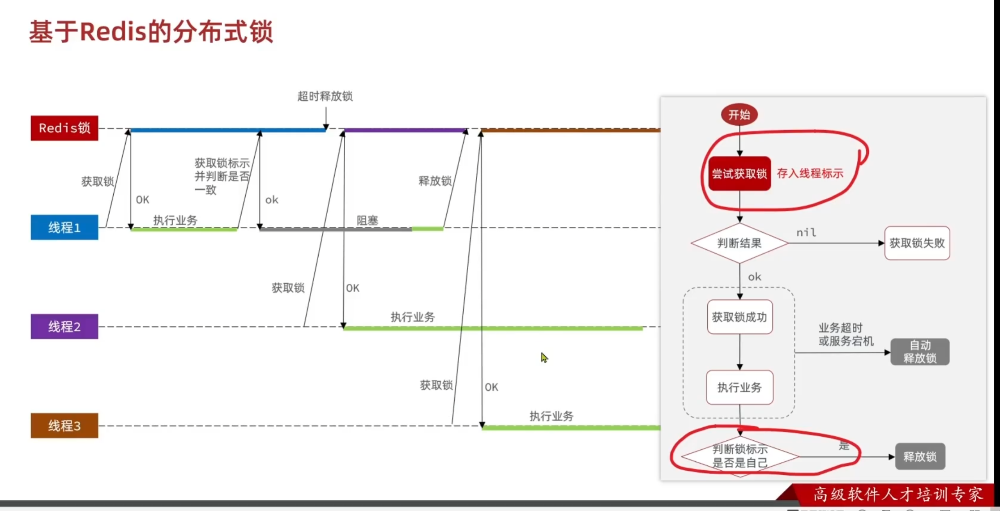
Redis事务？？？？？ XXXX LUA脚本
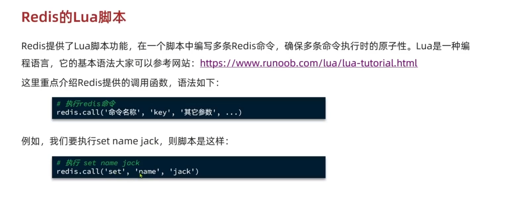
if (redis.call('get', KEYS[1]) == ARGV[1]) then
-- 释放锁
return redis.call('del', KEYS[1])
end
return 0
public class LuaRedisLock implements ILock{
private StringRedisTemplate stringRedisTemplate;
private String name;
private final static String KEY_PREFIX = "lock:";
private final static String ID_PREFIX = UUID.randomUUID().toString(true) + "-";
// 释放锁的脚本,通过文件加载
private static final DefaultRedisScript<Long> SECUNLOCK_SCRIPT;
static {
SECUNLOCK_SCRIPT = new DefaultRedisScript<>();
SECUNLOCK_SCRIPT.setLocation(new ClassPathResource("secUnlock.lua"));
SECUNLOCK_SCRIPT.setResultType(Long.class);
}
public LuaRedisLock(String name, StringRedisTemplate stringRedisTemplate) {
this.name = name;
this.stringRedisTemplate = stringRedisTemplate;
}
@Override
public boolean tryLock(long timeoutSec) {
String threadId = ID_PREFIX + Thread.currentThread().getId();
Boolean isLock = stringRedisTemplate.opsForValue().setIfAbsent(KEY_PREFIX + name, threadId, timeoutSec, TimeUnit.SECONDS);
// 防止自动拆箱的空指针
return Boolean.TRUE.equals(isLock);
}
@Override
public void unlock() {
// 判断标识是否一致
String threadId = ID_PREFIX + Thread.currentThread().getId();
// 调用lua脚本, 满足了原子性
stringRedisTemplate.execute(
SECUNLOCK_SCRIPT,
Collections.singletonList(KEY_PREFIX + name),
threadId);
}
}
下述问题发生概率极低
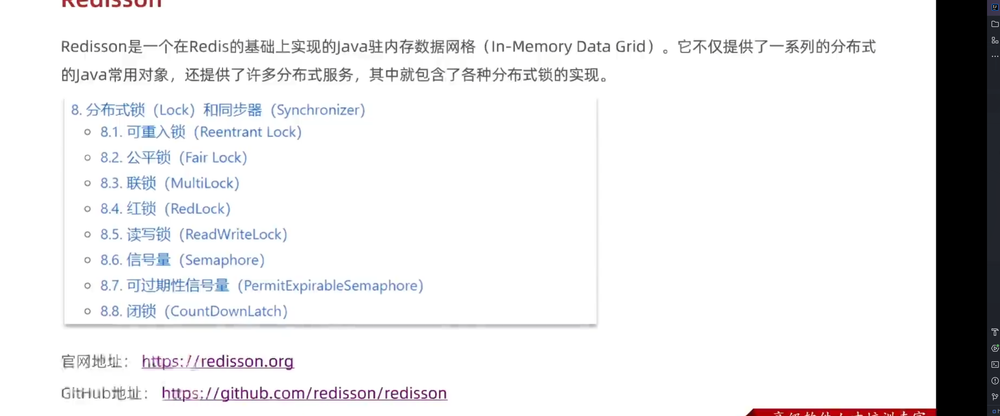
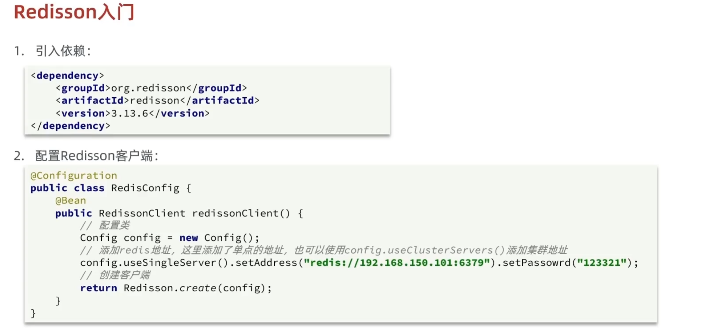
可重入性
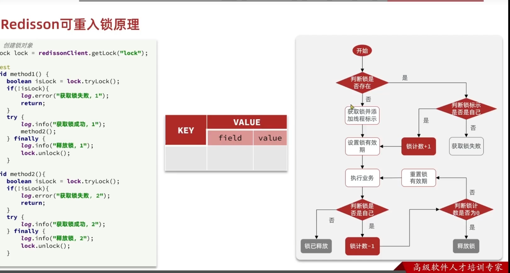
， 用LUA脚本实现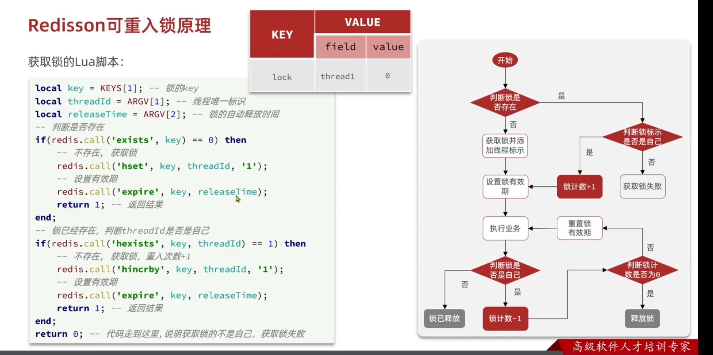
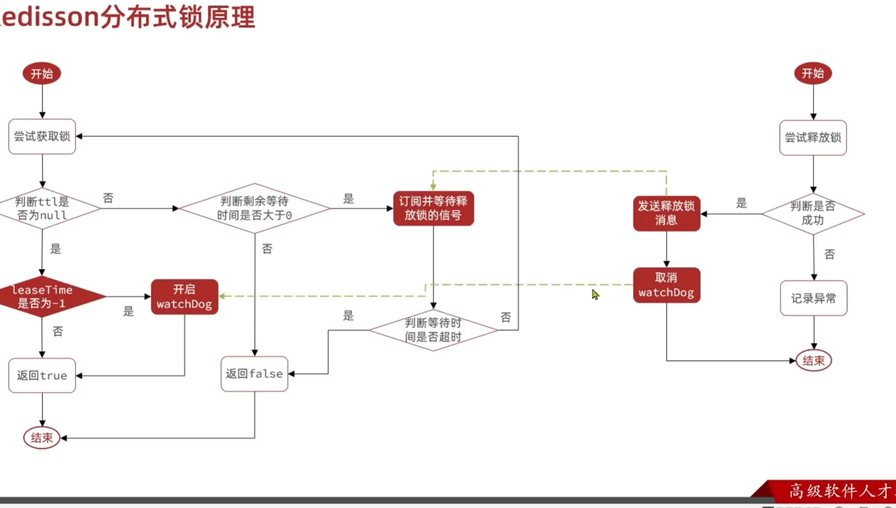
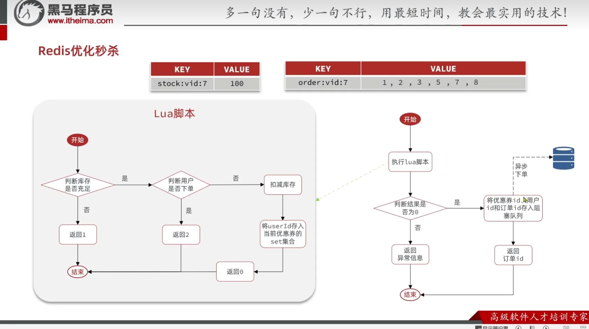
local voucherId = ARGV[1]
local userId = ARGV[2]
local currentTime = tonumber(ARGV[3])
local stockKey = 'seckill:stock:' .. voucherId
local orderKey = 'seckill:order:' .. voucherId
-- 获取活动信息
local stock = tonumber(redis.call('hget', stockKey, 'stock'))
local startTime = tonumber(redis.call('hget', stockKey, 'start_time'))
local endTime = tonumber(redis.call('hget', stockKey, 'end_time'))
-- 判断活动是否未开始
if currentTime < startTime then
return 3
end
-- 判断活动是否已结束
if currentTime > endTime then
return 4
end
-- 判断库存是否充足
if stock <= 0 then
return 1
end
-- 判断用户是否已经下单
if redis.call('sismember', orderKey, userId) == 1 then
return 2
end
-- 扣减库存并记录用户
redis.call('hincrby', stockKey, 'stock', -1)
redis.call('sadd', orderKey, userId)
return 0
private static final String LUA_SCRIPT_NAME = "/lua/secKill2.lua";
private static final DefaultRedisScript<Long> SECKILL_SCRIPT;
static {
SECKILL_SCRIPT = new DefaultRedisScript<>();
SECKILL_SCRIPT.setLocation(new ClassPathResource(LUA_SCRIPT_NAME));
SECKILL_SCRIPT.setResultType(Long.class);
}
public Long seckillVoucherYiBU(Long voucherId){
// 执行LUA脚本
Long userId = UserHolder.getUser().getId();
// 当前时间的时间戳
Long now = LocalDateTime.now().toEpochSecond(ZoneOffset.UTC);
Long result = stringRedisTemplate.execute(
SECKILL_SCRIPT,
Collections.emptyList(),
voucherId.toString(),
userId.toString(),
now.toString()
);
int r = result.intValue();
if(r == 1){
throw new VoucherException("库存不足");
} else if(r == 2){
throw new VoucherException("不能重复下单");
} else if(r == 3){
throw new VoucherException("活动未开始");
} else if(r == 4){
throw new VoucherException("活动已结束");
}
// 有购买资格，保存到阻塞队列
long orderId = redisIdWorker.nextId("seckill:orderID");
// 加入异步MQ队列,实现订单创建
VoucherOrder order = new VoucherOrder();
order.setId(orderId);
order.setUserId(UserHolder.getUser().getId());
order.setVoucherId(voucherId);
// rabbitTemplate.convertAndSend("order.direct", "order.routing.key", order);
rabbitTemplate.convertAndSend("order.exchange", "order.seckill.routing.key", order);
return orderId;
}
@Component
@Slf4j
public class OrderSecMq {
@Resource
private VoucherOrderServiceImpl voucherOrderService;
@Resource
private ISeckillVoucherService seckillVoucherService;
// 绑定交换机、队列、路由键
@RabbitListener( bindings = @QueueBinding(
value = @Queue(value = "order.seckill.queue", durable = "true"),
exchange = @Exchange(value = "order.exchange", type = "direct", durable = "true"),
key = "order.seckill.routing.key"
))
@Transactional
public void createOrder(VoucherOrder voucherOrder){
// 幂等判断
VoucherOrder voucherOrder1 = voucherOrderService.getById(voucherOrder.getId());
if (voucherOrder1 != null){
log.info("mq, 订单已存在");
return;
}
try{
// 库存见一
// 扣减库存
boolean success = seckillVoucherService.update()
.setSql("stock=stock-1")
.eq("voucher_id", voucherOrder.getVoucherId()).gt("stock",0) // 乐观锁，解决超卖
.update();
if(!success){
log.error("mq, 库存不足");
}
voucherOrderService.save(voucherOrder);
log.info("mq, 扣减库存成功");
}catch (Exception e){
log.error("mq, 下单失败, 订单详情：", voucherOrder);
}
}
}
spring:
application:
name: hmdp
rabbitmq:
host: localhost
port: 5672
username: sats
password: 123456
virtual-host: /dp
# 生产者重试机制
connection-timeout: 1s
template:
retry:
enabled: true
multiplier: 1
max-attempts: 3
initial-interval: 1000ms
listener:
simple:
acknowledge-mode: auto
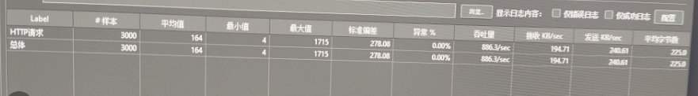
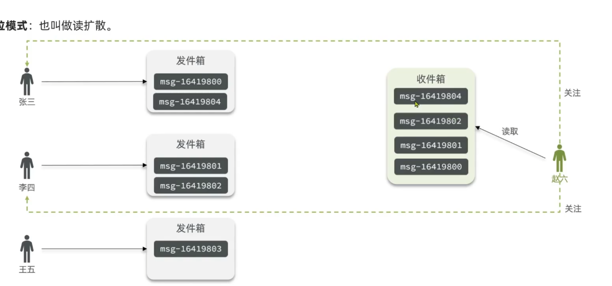
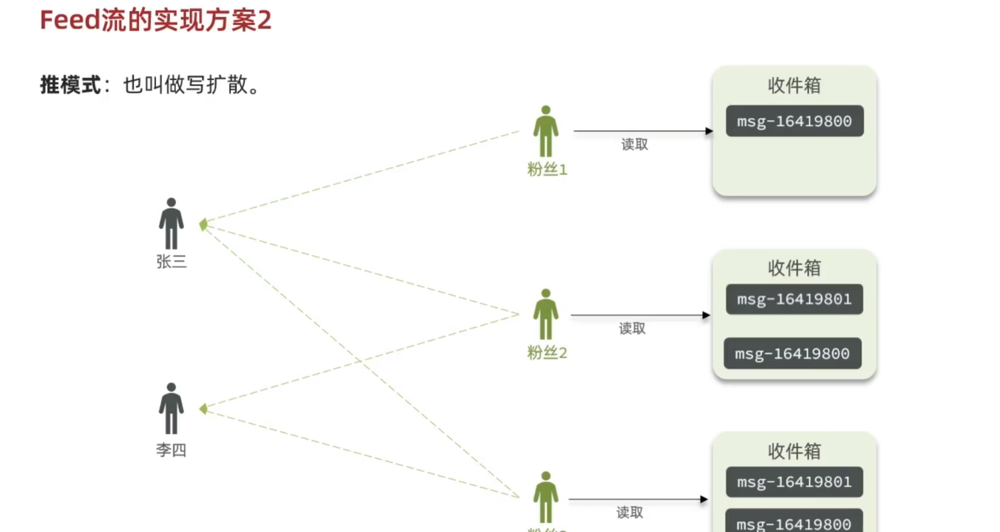
Q:一人多单问题？针对Lua脚本+RabbitMQ优化藏品抢购的订单处理流程
使用hash存储，key为藏品ID,hashkey为用户ID,value为已经购买数量，脚本传递购买资格数量
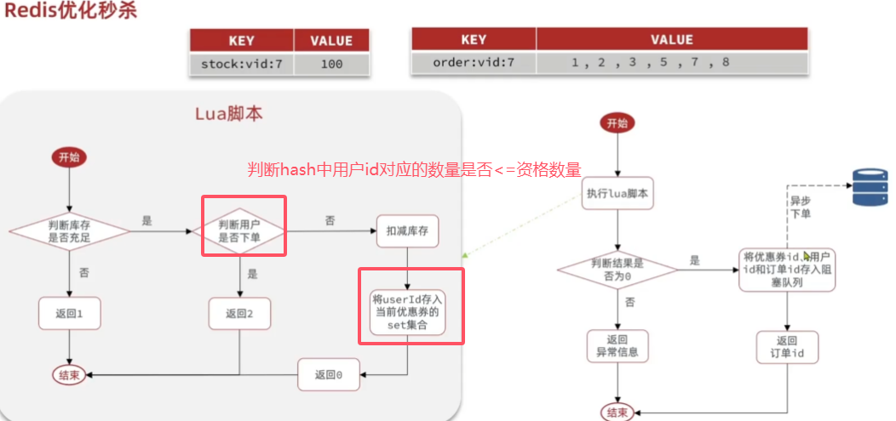
Q:实现MetaObjectHandler接口，重写insertFill，updateFill方法实现公共字段的自动填充
1.在实体类上添加注解@TableField，指定自动填充的策略
2.创建一个类，实现MetaObjectHandler接口，并重写相应的方法
/**
* 员工实体
*/
@Data
public class Employee implements Serializable {
private static final long serialVersionUID = 1L;
private Long id;
private String username;
private String name;
private String password;
private String phone;
private String sex;
private String idNumber;
private Integer status;
//插入时候填充
@TableField(fill = FieldFill.INSERT)
private LocalDateTime createTime;
//插入和更新时填充
@TableField(fill = FieldFill.INSERT_UPDATE)
private LocalDateTime updateTime;
//插入时填充
@TableField(fill = FieldFill.INSERT)
private Long createUser;
//插入更新时填充
@TableField(fill = FieldFill.INSERT_UPDATE)
private Long updateUser;
package com.hmdp.config;/**
* @Description: TODO
* @Author: sats@jz
* @Date: 2024/11/5 19:20
**/
import com.baomidou.mybatisplus.core.handlers.MetaObjectHandler;
import org.apache.ibatis.reflection.MetaObject;
import java.time.LocalDateTime;
/**
* @description TODO
* @author sats@jz
* @date 2024年11月05日 19:20
*/
@configuration
public class MyMetaObjectHandler implements MetaObjectHandler {
@Override
public void insertFill(MetaObject metaObject) {
if (metaObject.hasSetter("createTime")) {
metaObject.setValue("createTime", LocalDateTime.now()); // 创建时间
}
if (metaObject.hasSetter("updateTime")) {
metaObject.setValue("updateTime", LocalDateTime.now()); // 修改时间
}
if (metaObject.hasSetter("createUser")) {
metaObject.setValue("createUser", 1); // 创建人ID
}
if (metaObject.hasSetter("updateUser")) {
metaObject.setValue("updateUser", 1); // 修改人ID
}
}
@Override
public void updateFill(MetaObject metaObject) {
if (metaObject.hasSetter("updateTime")) {
metaObject.setValue("updateTime", LocalDateTime.now()); // 修改时间
}
if (metaObject.hasSetter("updateUser")) {
metaObject.setValue("updateUser", 1); // 修改人ID
}
}
}
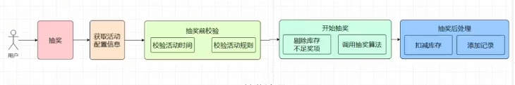
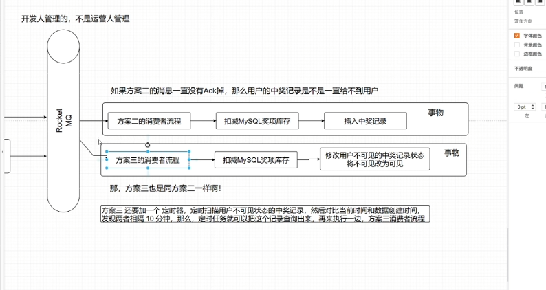
抽奖算法设计，变量，1.用户创建时间到抽奖时间之差的时间戳t 2.用户历史期间已经中奖品次数m 3.用户最近一个月消费总数与总消费数比值r 4.随机扰动因子，增加一点随机性 输出一个概率p， 根据概率p得到中将奖品的优劣。其中3的优先级大于2大于1大于4
t: 用户创建时间到抽奖时间的差值（时间戳）。
mmm: 用户历史期间已中奖品次数。
rrr: 用户最近一个月消费总数与总消费数的比值。
随机扰动因子：用于增加随机性，使得权重相近的用户也有一定概率获得奖品。
根据优先级分配每个变量的权重，例如：
我们先对各变量做归一化处理，以确保它们在相同范围（例如0到1之间），方便权重计算。
根据优先级分配每个变量的权重，例如：
然后，我们使用加权求和的方式计算一个最终的概率 ppp 来决定中奖的概率：
其中，wrw_rwr、wmw_mwm、wtw_twt、wrandw_{\text{rand}}wrand 分别为各个变量的权重。
计算出 ppp 后，可以将其用于奖品分配，按照ppp 的值将用户分入不同的奖品级别。例如：
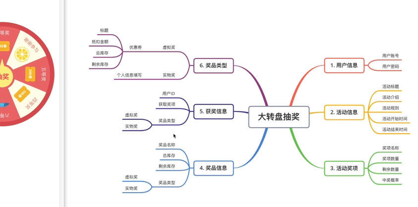
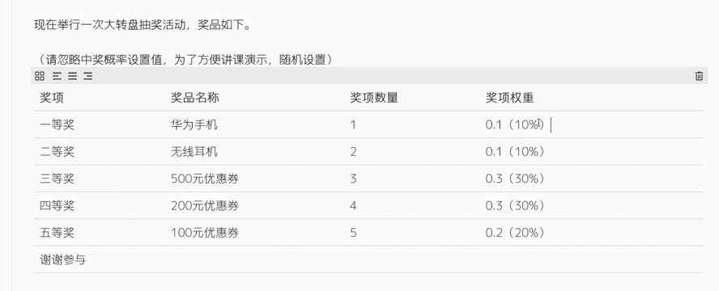
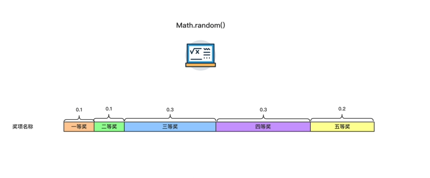
执行LUA脚本
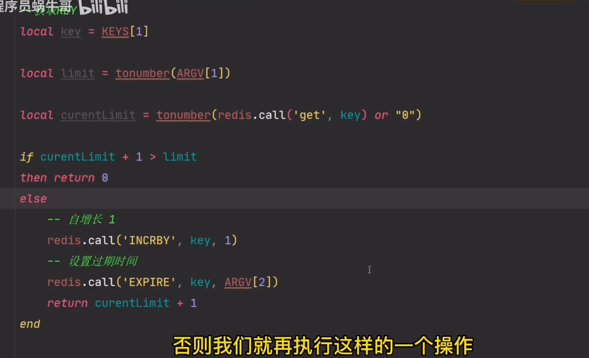
基于Redis Incrby自增长， 传参过期时间，IP地址， 限制次数，
LUA脚本
数据结构 hash
接口key:
IP: Incrby < 限制次数
基于注解和redis实现接口IP限流， 比如1S内请求30次，则封禁IP30分钟。
实现步骤
创建一个注解 IpRateLimit，用于指定请求次数、时间窗口和封禁时间。
import org.springframework.beans.factory.annotation.Autowired;
import org.springframework.data.redis.core.RedisTemplate;
import org.springframework.stereotype.Component;
import java.util.concurrent.TimeUnit;
@Component
public class RedisRateLimiter {
@Autowired
private RedisTemplate<String, Integer> redisTemplate;
public boolean isAllowed(String ip, int maxRequests, int timeWindow, int banTime) {
String countKey = "rate_limit:count:" + ip; // IP请求次数的键
String banKey = "rate_limit:ban:" + ip; // 封禁标记的键
// 检查 IP 是否已被封禁
if (redisTemplate.hasKey(banKey)) {
return false; // 如果存在封禁标记，则直接返回不允许请求
}
// 记录请求次数
Integer count = redisTemplate.opsForValue().get(countKey);
if (count == null) {
// 第一次请求，设置计数器并设定时间窗口
redisTemplate.opsForValue().set(countKey, 1, timeWindow, TimeUnit.SECONDS);
return true;
} else if (count < maxRequests) {
// 在时间窗口内，计数未超过限制，增加计数
redisTemplate.opsForValue().increment(countKey);
return true;
} else {
// 超过限流，设置封禁标记
redisTemplate.opsForValue().set(banKey, 1, banTime, TimeUnit.MINUTES);
redisTemplate.delete(countKey); // 删除计数器
return false;
}
}
}
Lua 脚本会执行以下逻辑：
-- Redis Lua 脚本
local countKey = KEYS[1]
local banKey = KEYS[2]
local maxRequests = tonumber(ARGV[1])
local timeWindow = tonumber(ARGV[2])
local banTime = tonumber(ARGV[3])
-- 检查是否已被封禁
if redis.call("EXISTS", banKey) == 1 then
return 0 -- 已封禁，拒绝请求
end
-- 获取当前请求次数
local currentRequests = tonumber(redis.call("GET", countKey) or "0")
if currentRequests >= maxRequests then
-- 超过最大请求次数，设置封禁键和封禁时间
redis.call("SET", banKey, 1, "EX", banTime * 60)
redis.call("DEL", countKey) -- 清除计数器
return 0 -- 超过限流，返回封禁结果
else
-- 未超出限流，增加请求计数
redis.call("INCR", countKey)
redis.call("EXPIRE", countKey, timeWindow)
return 1 -- 请求允许
end
创建一个 RedisRateLimiter 类，通过 RedisTemplate 调用 Lua 脚本。这个类的 isAllowed 方法会根据 IP 和限流参数进行限流判断。
import org.springframework.beans.factory.annotation.Autowired;
import org.springframework.core.io.ClassPathResource;
import org.springframework.data.redis.core.RedisTemplate;
import org.springframework.data.redis.core.script.DefaultRedisScript;
import org.springframework.stereotype.Component;
import java.util.Arrays;
@Component
public class RedisRateLimiter {
@Autowired
private RedisTemplate<String, Integer> redisTemplate;
// Lua脚本
private final DefaultRedisScript<Long> rateLimitScript;
public RedisRateLimiter() {
// 加载 Lua 脚本
rateLimitScript = new DefaultRedisScript<>();
rateLimitScript.setLocation(new ClassPathResource("rate_limit.lua")); // Lua 脚本路径
rateLimitScript.setResultType(Long.class);
}
public boolean isAllowed(String ip, int maxRequests, int timeWindow, int banTime) {
String countKey = "rate_limit:count:" + ip;
String banKey = "rate_limit:ban:" + ip;
Long result = redisTemplate.execute(rateLimitScript,
Arrays.asList(countKey, banKey),
maxRequests, timeWindow, banTime);
return result != null && result == 1;
}
}
创建切面类，拦截带有 @IpRateLimit 注解的方法，根据注解参数调用 RedisRateLimiter 实现限流。
import org.aspectj.lang.ProceedingJoinPoint;
import org.aspectj.lang.annotation.Around;
import org.aspectj.lang.annotation.Aspect;
import org.springframework.beans.factory.annotation.Autowired;
import org.springframework.stereotype.Component;
import javax.servlet.http.HttpServletRequest;
@Aspect
@Component
public class RateLimitAspect {
@Autowired
private RedisRateLimiter redisRateLimiter;
@Autowired
private HttpServletRequest request;
@Around("@annotation(ipRateLimit)")
public Object around(ProceedingJoinPoint joinPoint, IpRateLimit ipRateLimit) throws Throwable {
String clientIp = request.getRemoteAddr(); // 获取客户端 IP 地址
int maxRequests = ipRateLimit.maxRequests();
int timeWindow = ipRateLimit.timeWindow();
int banTime = ipRateLimit.banTime();
// 检查请求是否超过限流
if (!redisRateLimiter.isAllowed(clientIp, maxRequests, timeWindow, banTime)) {
throw new RuntimeException("IP banned due to too many requests - please try again later.");
}
// 限流检查通过，执行方法
return joinPoint.proceed();
}
}
在需要限流的接口方法上添加 @IpRateLimit 注解，指定限流配置。
import org.springframework.web.bind.annotation.GetMapping;
import org.springframework.web.bind.annotation.RequestMapping;
import org.springframework.web.bind.annotation.RestController;
@RestController
@RequestMapping("/api")
public class ApiController {
@IpRateLimit(maxRequests = 30, timeWindow = 1, banTime = 30) // 1秒内超过30次请求封禁30分钟
@GetMapping("/limited-endpoint")
public String limitedEndpoint() {
return "Request successful";
}
}